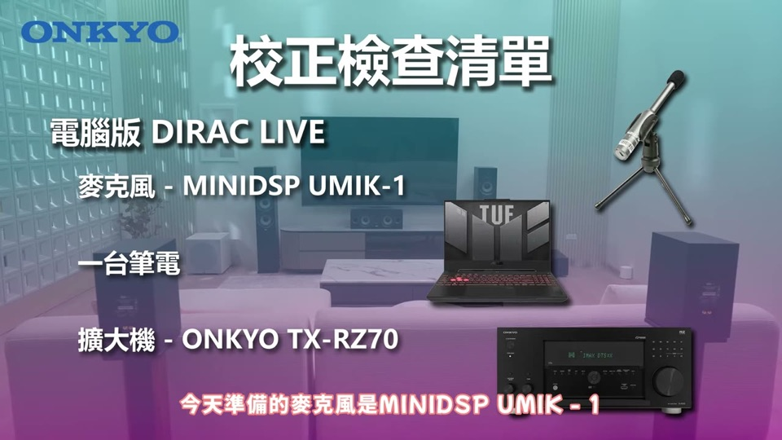
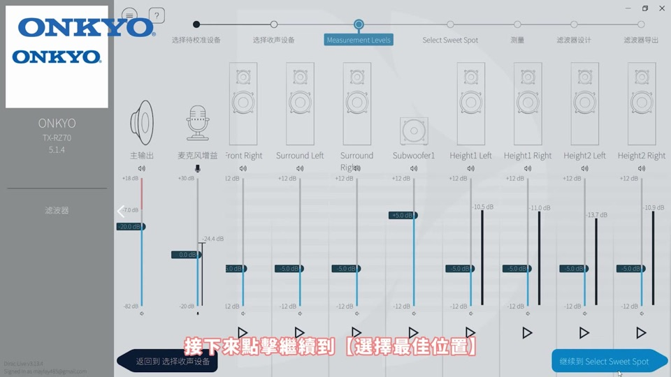
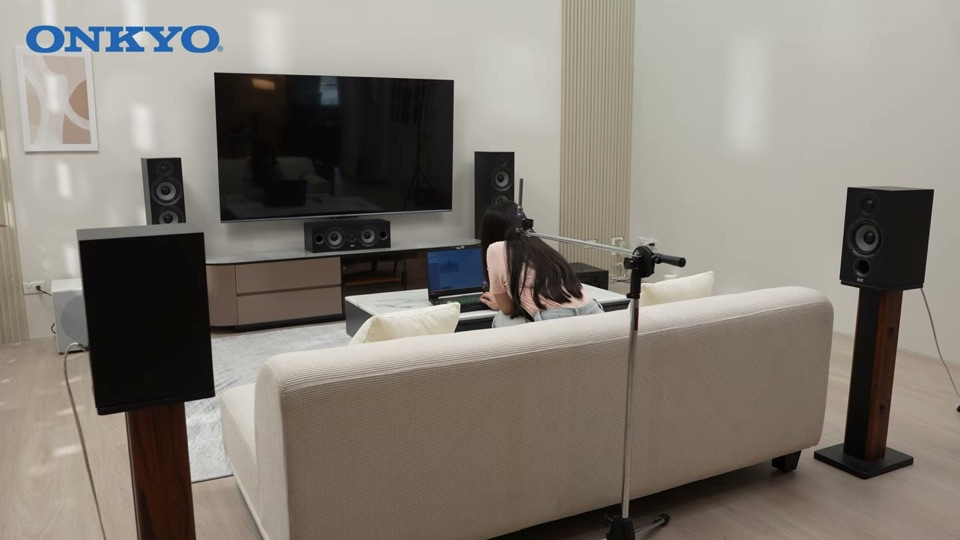
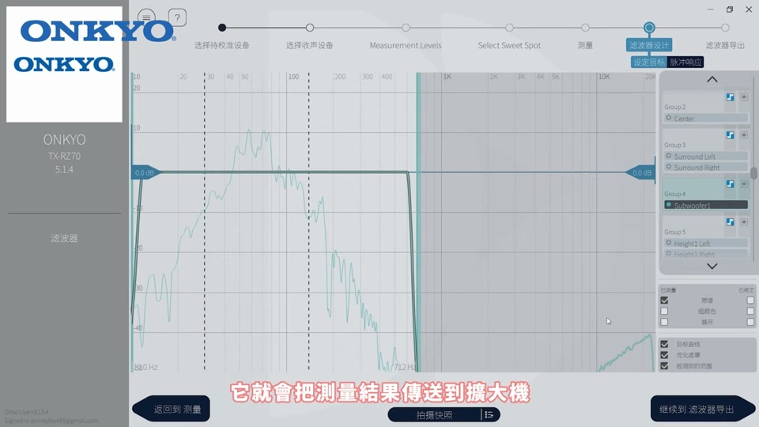
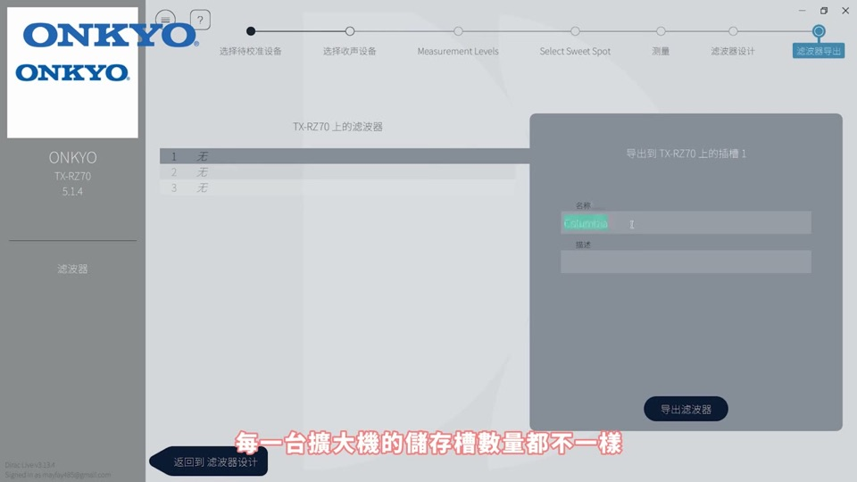

這支教你自己動手用 Dirac Live 做喇叭音場校正，不用花錢請專家。分兩種做法——電腦版（較完整、可自訂曲線）與手機 App 版（快速、免拉線）。示範擴大機為 Onkyo TX-RZ70。這是基礎操作篇；想深入調曲線看下方「調教篇」。
開始前的準備
- 電腦版：校正麥克風 MiniDSP UMIK-1 ＋ 筆電 ＋ 擴大機
- 手機版：擴大機附贈的麥克風 ＋ 手機
- 電腦／手機要跟擴大機在同一個網域（同一個 Wi-Fi）
- 盡量安靜的房間（環境太吵會校正失敗）
- 別用會發出雜音的環境，測量時保持安靜

電腦版所需：UMIK-1 麥克風、筆電、Onkyo TX-RZ70 擴大機
電腦版 操作步驟
1
下載並開啟 Dirac Live，選擇裝置
到官網下載並開啟 Dirac Live。確認電腦與擴大機在同一網域，選擇要校正的裝置（本例 Onkyo TX-RZ70）。
官網下載 Dirac Live
軟體中選擇你的擴大機
2
載入麥克風校正檔（關鍵）
重要：先到 MiniDSP 網站下載該麥克風型號的校正檔，載入後可修正麥克風生產公差、讓測量更準。
3
設定測量級別與喇叭配置
點「繼續」到測量級別（Measurement Level），選麥克風平台，接著選喇叭配置（聲道數）。

選擇喇叭配置
4
選聆聽位置、房間大小，開始測量
選最佳聆聽位置與房間大小。本例用 3 點測量，依畫面指示移動麥克風到三個位置各測一次。

依指示移動麥克風做多點測量
5
傳送結果到擴大機
系統計算後，按完成把測量結果傳送到擴大機，測量即完成。

測量結果傳送到擴大機
6
用「儲存槽」一次設好多套模式

RZ70 有 3 個儲存槽，可存不同曲線
儲存槽玩法：Onkyo RZ70 有 3 個槽（每台擴大機數量不同）。可存不同曲線一鍵切換，例如：
・槽 1：標準校正 ・槽 2：低音加重（看電影） ・槽 3：其他模式
調整完一鍵套用，音場校正完成。可切換 Dirac 開關比較校正前後差別。
手機 App 版（快速、免拉線）
7
裝 App、開始程序、插麥克風
因示範機是 RZ70，需同時裝 Onkyo Controller App ＋ Dirac Live App。選 Listening Mode → 開始程序 → 把附贈麥克風插進擴大機 → 確認喇叭配置。
手機 App 版：插入附贈麥克風
8
選測量方式、自動分析套用
校正時會發出較大音量，屬正常，別被嚇到。
系統跑完會自動推薦校正曲線，點按鈕即套用，全程約幾分鐘。
校正失敗？常見原因與解法
| 環境太吵 / 測量音太小 | 挑夜深人靜校正；或把主音量調高 |
| 重低音 / 主音量太大聲 | 把重低音或主音量調小 |
失敗時系統會顯示原因，照著調即可
⚠️ 容易誤判的雷（主講親身踩到）：就算擺位正確，只要某聲道的線忘了插（如天空聲道），系統也會跳「訊噪比／水平過低」。看到這提示先檢查是不是漏插線，別只顧著降環境音。
▶ 觀看原始影片（釪環數位音響）
工具版本：2026-07-22